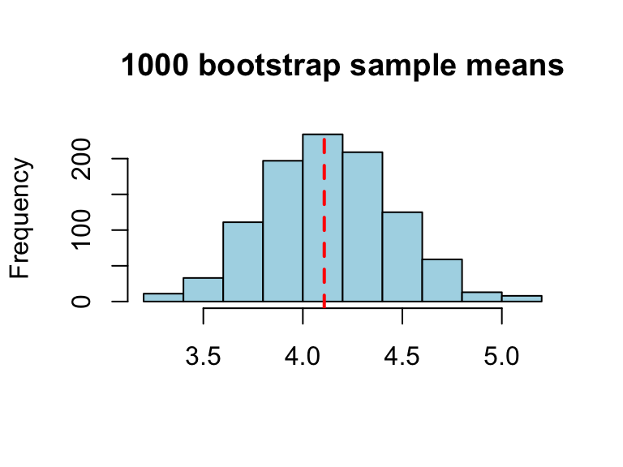
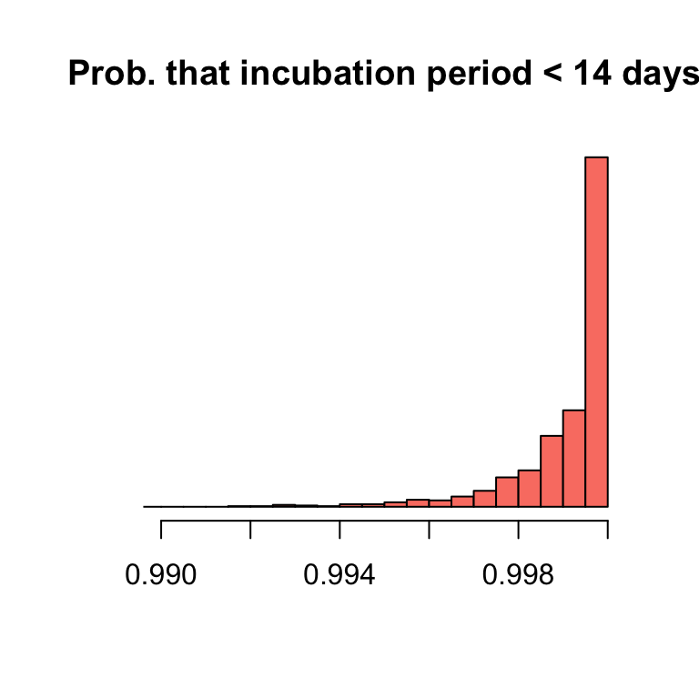
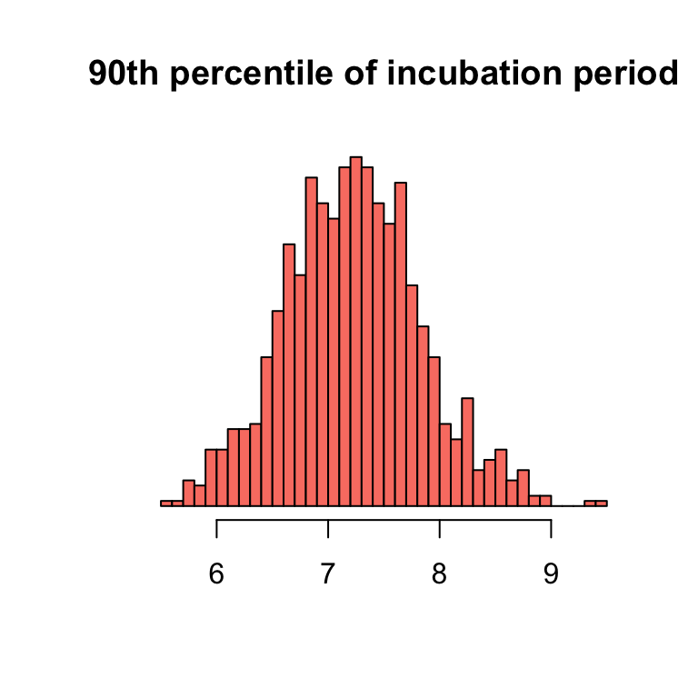

DATA 352/551: Modeling and Simulation
Material is based on The Incubation Period of Coronavirus Disease 2019 (COVID-19) From Publicly Reported Confirmed Cases: Estimation and Application, Lauer et. al., Annals of Internal Medicine, published online on March 10, 2020. Data and code are publically available.
nCoV_simple.csv: a simplified dataset that contains the incubation periods of \(50\) patients.
ncov10 based on the first \(10\) patientsRecall, a statistic is a function (i.e., a numeric summary) of data. A statistic is not the truth (i.e., parameter). We need to perform statistical inference.
To make inference on the true average incubation period (\(\mu\)) based on the sample average (\(\bar{X} = 4.9\)), we need to understand the randomness of \(\bar{X}\) (i.e., its “sampling distribution”). Imagine two scenarios:
How do we know the sampling distribution of \(\bar{X}\)?
The sampling distribution of \(\bar{X}\) is well studied based on the Central Limit Theorem.
Limitations:
Solution:
To get a bootstrap sample: resample the original data with replacement; sample size stays the same.
Exercise: Use the nCoV_simple dataset (incubation periods of \(50\) patients) to obtain \(B = 1000\) bootstrap samples; record the mean of each bootstrap sample in a vector called bootresult.
[1] 4.4170 4.2912 4.3344 3.9876 4.3224 4.2810 4.1604 3.9550 3.7084 4.1556
[11] 4.4366 4.1684 4.4770 3.8586 4.1460 4.7622 4.2714 3.9926 4.5928 4.9680
[21] 4.3666 4.8554 4.2666 4.6834 4.4442 3.9380 4.1924 4.0738 4.2378 4.3464Using the 1000 bootstrap samples, we can estimate the SD of \(\bar{X}\):
In comparison, without using bootstrap, we can estimate the SD of \(\bar{X}\) with the formula: \(s/\sqrt{n}\)

A 95% confidence interval of the mean incubation period
The median incubation period is often more of interest (why?) Compared to the mean, properties of the median are harder to calculate mathematically. Instead, we can use bootstrap to study these properties.
Exercise: use the nCoV_simple dataset
[1] 4[1] 0.3847611 2.5% 97.5%
2.92 4.50 The basic (nonparametric) bootstrap method does not work well in the following situations:
Intuition: the resampling process ignores any dependence structure in the data;
Intuition: you would never exceed the maximum of the original data in a bootstrap sample, leading to underestimation of the variation of the maximum.
Intuition: the resampling process tends to oversample extreme values in the original data.
Suppose we decide to fit a weibull distribution to the incubation period. We can then also estimate the probability that the incubation period is shorter than 14 days (call this \(\hat{p}\)).
[1] 0.9994694What if we want to construct a confidence interval based on \(\hat{p}\)?
We would need to know the sampling distribution, or at least the variation, of \(\hat{p}\).
This can be difficult to derive if the model, and/or the parameter of interest, is complicated.
Instead, we will study the sampling distribution of \(\hat{p}\) using bootstrap.
Step 1: Fit the Weibull model (based on the original data) to obtain the plug-in distribution.
Step 2: Randomly sample another dataset (of the same sample size \(n=50\)) from the plug-in distribution.
Exercise: Obtain \(1000\) values of \(\hat{p}\) using bootstrap. Plot a histogram of these values and construct a 95% confidence interval.
# obtain plugin distribution
model1 <- fitdistr(ncov_simple$incubation, 'weibull', lower = 0)
# run bootstrap
bootsize <- 1000
result <- rep(NA, bootsize)
for (i in 1:bootsize) {
bootdata <- rweibull(50, shape = model1$estimate[1], scale = model1$estimate[2])
modelboot <- fitdistr(bootdata, 'weibull', lower = 0)
result[i] <- pweibull(14, shape = modelboot$estimate[1], scale = modelboot$estimate[2])
}
hist(result,nclass=50,xlim=c(0.99,1),main='Prob. that incubation period < 14 days',
yaxt='n',xlab=NA,col='salmon',ylab=NA) 2.5% 97.5%
0.9954364 0.9999991 
qweibull).[1] 7.293084# run bootstrap
bootsize <- 1000
result <- rep(NA, bootsize)
for (i in 1:bootsize) {
bootdata <- rweibull(50, shape = model1$estimate[1], scale = model1$estimate[2])
modelboot <- fitdistr(bootdata, 'weibull', lower = 0)
result[i] <- qweibull(0.9, shape = modelboot$estimate[1], scale = modelboot$estimate[2])
}
hist(result,nclass=50,main='90th percentile of incubation period',
yaxt='n',xlab=NA,col='salmon',ylab=NA) 2.5% 97.5%
6.022809 8.528463 